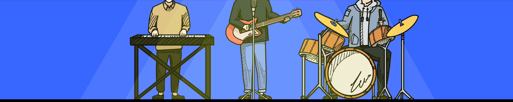
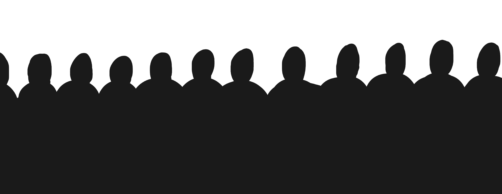

Do you like festival?
모임의 장, 축제
축제는 원래 개인 또는 집단에서 특별한 의미가 있는 일 혹은 시간을 기념하는 의식에서 유래됐지만,
현대에는 단순히 기념을 넘어서 다 같이 문화를 즐기기 위한 문화의 장으로 발전했습니다.
전국에서 매우 화려하고 다양한 종류의 축제가 매년 열리고 있습니다.
하지만, 화려한 축제 속에서 얼마나 많은 쓰레기가 발생하는지 알고 계시나요?
Next